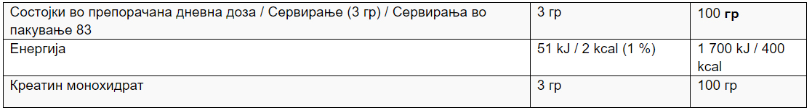

Без бои, презервативи,засладувачи / Клинички тестиран / Произведено во ЕУ / Без Глутен / Без ГМО / Креатин Монохидрат / Направен за подобри резултати / Без разлика на тоа каде ги поставувате вашите цели: во теретана, на лента, надворешна активност или активност на терен, за добар тренинг и активност потребно ви е креатин монохидрат. Креатинот монохират е дизајниран од страна на спортистите и одобрено од страна на нутриционистите за подобрување на секој тренинг и активност.Креатинот ги зголемува физичките перформанси при последователни рафали на краткортајна, интензивна вежба. Бенефитот се појавува со користење на 3 гр дневно што е исто така и препорачаната дневна доза.
